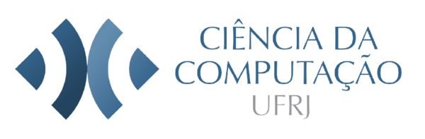
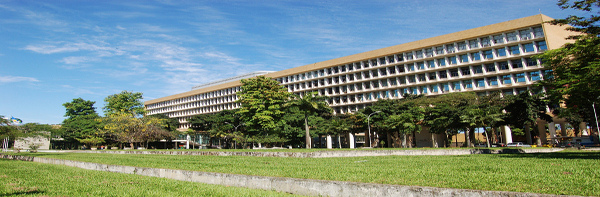
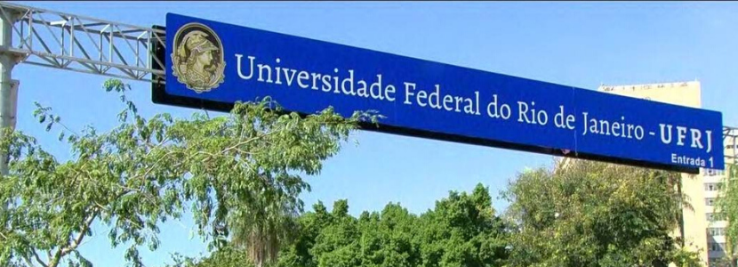

Bem-vindo!
Para informações sobre o curso, por favor, visite: Instituto de Computação - UFRJ.
Últimas notícias

Aniversário IC
Primeiro aniversário da criação do Instituto de Computação.

Disciplinas IC 2021.2
Informações sobre as disciplinas oferecidas pelo IC em 2021.2.

Edital Suplementar PAEALIG
Inscrições abertas para seleção de bolsistas PAELIG LIG-LCI-DCC.